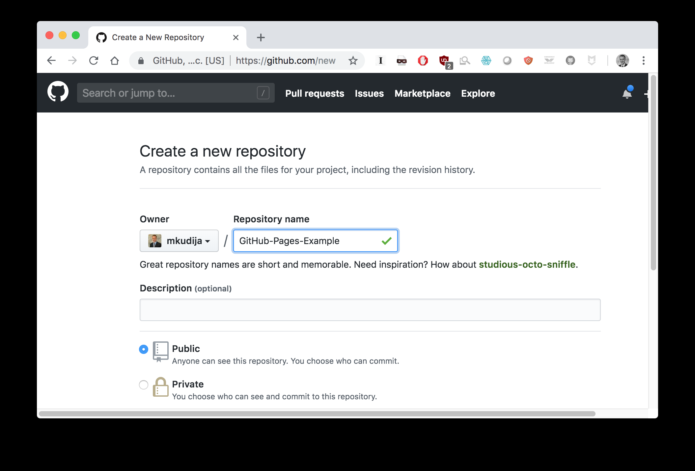
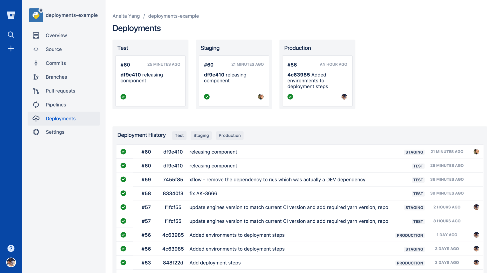
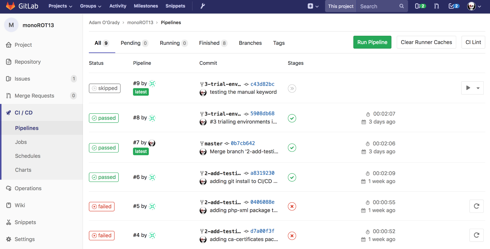
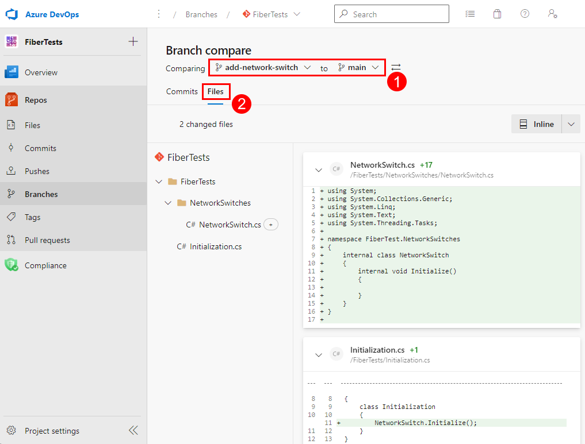
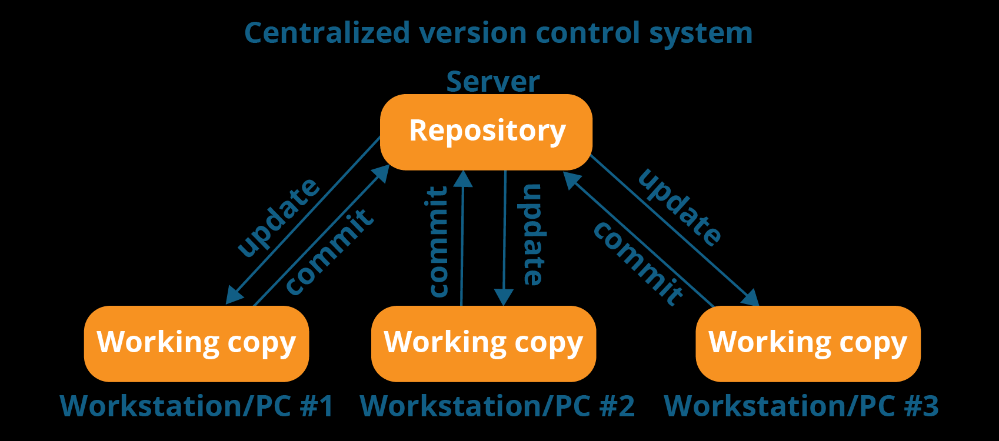

Git is a distributed version control system designed to track changes in source code during software development. Unlike centralized systems, Git allows each developer to have a full-fledged repository with complete history and full version tracking capabilities, independent of network access or a central server.
By far, the most widely used modern version control system in the world today is Git. Git is a mature, actively maintained open source project originally developed in 2005 by Linus Torvalds, the famous creator of the Linux operating system kernel
Online platforms using Git?
GITHUB

The most popular platform, known for its vast open-source community and integration with GitHub Actions for CI/CD.
BITBUCKET

Integrated with Atlassian tools like Jira and Trello, supporting both Git and Mercurial repositories.
GITLAB

Offers built-in CI/CD pipelines, issue tracking, and is available as both a cloud service and a self-hosted solution.
Azure Repos

Part of Microsoft's Azure DevOps suite, providing Git repositories with advanced security and collaboration features.
Why use Git for your organization?

Collaboration: Facilitates multiple developers working on the same project simultaneously.
Branching and Merging: Allows for feature development, bug fixes, and experiments in isolated branches.
History Tracking: Keeps a detailed history of changes, aiding in debugging and understanding project evolution.
Distributed Nature: Each developer has a complete copy of the repository, enhancing reliability and speed
How to install Git?
Git can be installed on various operating systems:
Windows: Download the installer from git-scm.com and follow the setup instructions.
macOS: Use Homebrew with the command brew install git, or download from git-scm.com.
Linux: Use package managers like apt for Ubuntu (sudo apt install git) or dnf for Fedora.